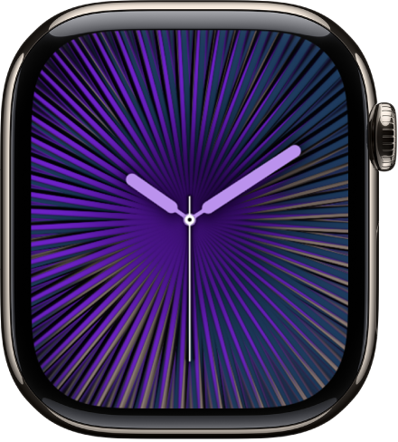

此表盘以数字形式重构了光线与金属表面的相互作用。刻度盘上的 3D 动画圆柱体实时对光线作出反应。
下方的文件数包括本地化资源。固件名称键能确认包的归属；组件的圆屏点击边界、亮屏过渡与 AOD 对照均待设备验证。
原始包 已解析属性表 Mach-O 方法与成员 ARM64 汇编 解出的图集
.strings × 132 .plist × 3 .metallib × 2 .car × 1 无扩展名 × 1
原始包 已解析属性表 Mach-O 方法与成员 ARM64 汇编 解出的图集
.strings × 132 .plist × 3 .metallib × 2 .car × 1 无扩展名 × 1
原始包 已解析属性表 Mach-O 方法与成员 ARM64 汇编 解出的图集
.strings × 132 .plist × 3 .metallib × 2 .car × 1 无扩展名 × 1
NTKAtiumFaceBundle.bundleFACE_ATIUM_DESCRIPTIONhwRadiantGoldhwBlackhwNaturalhwDarkBronzehwLightGoldhwSpaceGraysilverthreecolor6naturaljetblackrosegoldthreecolor1goldgraphitethreecolor2threecolor3threecolor4threecolor5色组与设备条件 Atium-F2026.color.plist Atium.color.plist 共享色组与默认值
-[NTKAtiumColorPalette tritiumMaskMultiplier];-[NTKAtiumColorPalette tritiumMaskMultiplier];-[NTKAtiumFaceView tritium_createFaceAnimator];-[NTKAtiumFaceView tritium_alwaysOnTimelines];-[NTKAtiumFaceView tritium_willTransitionToTritiumOnToFrameSpecifier:];-[NTKAtiumFaceView tritium_willTransitionToTritiumOffFromFrameSpecifier:];-[NTKAtiumQuad tritiumProgress];-[NTKAtiumQuad setTritiumProgress:];-[NTKAtiumQuad startWakeAnimationWithDuration:];-[NTKAtiumQuad overrideTritiumAnimation];-[NTKAtiumQuad setOverrideTritiumAnimation:];-[NTKAtiumQuad setTritiumMaskMultiplier:];-[NTKAtiumQuad tritiumMaskMultiplier];-[NTKAtiumQuadDelegate atiumQuadDidUpdateAnimatingOverrideDate:];-[NTKAtiumFaceView _applyTransitionFraction:fromOption:toOption:forCustomEditMode:slot:];-[NTKAtiumFaceView tritium_createFaceAnimator];-[NTKAtiumFaceView tritium_alwaysOnTimelines];-[NTKAtiumFaceView _configureForTransitionFraction:fromEditMode:toEditMode:];-[NTKAtiumFaceView setOverrideDate:duration:];-[NTKAtiumFaceView tritium_willTransitionToTritiumOnToFrameSpecifier:];-[NTKAtiumFaceView tritium_willTransitionToTritiumOffFromFrameSpecifier:];-[NTKAtiumFaceView _applyTransitionFraction:fromShape:toShape:];-[NTKAtiumFaceView _updateColorsWithInterpolatedPalette:];-[NTKAtiumFaceView atiumQuadDidUpdateAnimatingOverrideDate:];-[NTKAtiumQuad setOverrideDate:duration:];-[NTKAtiumQuad startWakeAnimationWithDuration:];-[NTKAtiumQuad blendSecondLightColor];-[NTKAtiumQuad blendTransitionFraction];-[NTKAtiumQuad isAnimatingOverrideDate];-[NTKAtiumQuad overrideTritiumAnimation];-[NTKAtiumQuad secondLightColor];-[NTKAtiumQuad setAnimatingOverrideDate:];-[NTKAtiumQuad setBlendSecondLightColor:];-[NTKAtiumQuad setBlendTransitionFraction:];-[NTKAtiumQuad setOverrideTritiumAnimation:];-[NTKAtiumQuad setSecondLightColor:];-[NTKAtiumColorPalette cornerComplicationColor];-[NTKAtiumColorPalette handsColor];-[NTKAtiumColorPalette isRainbow];-[NTKAtiumColorPalette isThreeColor];-[NTKAtiumColorPalette lightColor1];-[NTKAtiumColorPalette lightColor2];-[NTKAtiumColorPalette lightColor3];-[NTKAtiumColorPalette tritiumMaskMultiplier];-[NTKAtiumColorPalette swatchImageForSize:];-[NTKAtiumColorPalette init];-[NTKAtiumColorPalette _cornerComplicationColor];-[NTKAtiumColorPalette _handsColor];-[NTKAtiumColorPalette _lightColor1];-[NTKAtiumColorPalette _lightColor2];-[NTKAtiumColorPalette _lightColor3];-[NTKAtiumColorPalette isRainbow];-[NTKAtiumColorPalette isThreeColor];-[NTKAtiumColorPalette tritiumMaskMultiplier];+[NTKAtiumFace _initialDefaultComplicationForSlot:forDevice:];+[NTKAtiumFace complicationConfiguration];-[NTKAtiumFace editOptionThatHidesAllComplications];-[NTKAtiumFace _numberOfOptionsForCustomEditMode:slot:];-[NTKAtiumFace _defaultOptionForCustomEditMode:slot:];-[NTKAtiumFace _indexOfOption:forCustomEditMode:slot:];-[NTKAtiumFace _optionAtIndex:forCustomEditMode:slot:];-[NTKAtiumFaceView _complicationAlphaForEditMode:];-[NTKAtiumFaceView _updateColors];-[NTKAtiumFaceView createFaceColorPalette];-[NTKAtiumFaceView _applyTransitionFraction:fromOption:toOption:forCustomEditMode:slot:];-[NTKAtiumFaceView _applyBreathingFraction:forCustomEditMode:slot:];-[NTKAtiumFaceView _applyOption:forCustomEditMode:slot:];-[NTKAtiumFaceView _cleanupAfterEditing];-[NTKAtiumFaceView _hideTimeAndComplicationsInHomeScreen];-[NTKAtiumFaceView _configureComplicationView:forSlot:];-[NTKAtiumFaceView colorPalette];-[NTKAtiumFaceView _loadLayoutRules];-[NTKAtiumFaceView _allowsEditingSliderEditableColorsForSlot:];-[NTKAtiumFaceView _applyRubberBandingFraction:forCustomEditMode:slot:];-[NTKAtiumFaceView _updateColorsWithInterpolatedPalette:];-[NTKAtiumFaceView _updateComplicationColorsWithPalette:];-[NTKAtiumFaceView _updateComplicationsWithComplicationColor];-[NTKAtiumFaceView _updateFaceColorsWithPalette:];-[NTKAtiumFaceView _updateQuadColorsWithPalette:forQuad:];-[NTKAtiumQuad firstLightColor];-[NTKAtiumQuad backgroundLightColor];-[NTKAtiumQuad blendBackgroundLightColor];-[NTKAtiumQuad blendFirstLightColor];-[NTKAtiumQuad blendRecolorLightingTextureEnabled];-[NTKAtiumQuad blendSecondLightColor];-[NTKAtiumQuad blendUseThreeColorTexture];-[NTKAtiumQuad recolorLightingTextureEnabled];-[NTKAtiumQuad secondLightColor];-[NTKAtiumQuad setBackgroundLightColor:];-[NTKAtiumQuad setBlendBackgroundLightColor:];-[NTKAtiumQuad setBlendFirstLightColor:];-[NTKAtiumQuad setBlendRecolorLightingTextureEnabled:];-[NTKAtiumQuad setBlendSecondLightColor:];-[NTKAtiumQuad setBlendUseThreeColorTexture:];-[NTKAtiumQuad setFirstLightColor:];-[NTKAtiumQuad setRecolorLightingTextureEnabled:];-[NTKAtiumQuad setSecondLightColor:];-[NTKAtiumQuad setUseThreeColorTexture:];-[NTKAtiumQuad useThreeColorTexture];